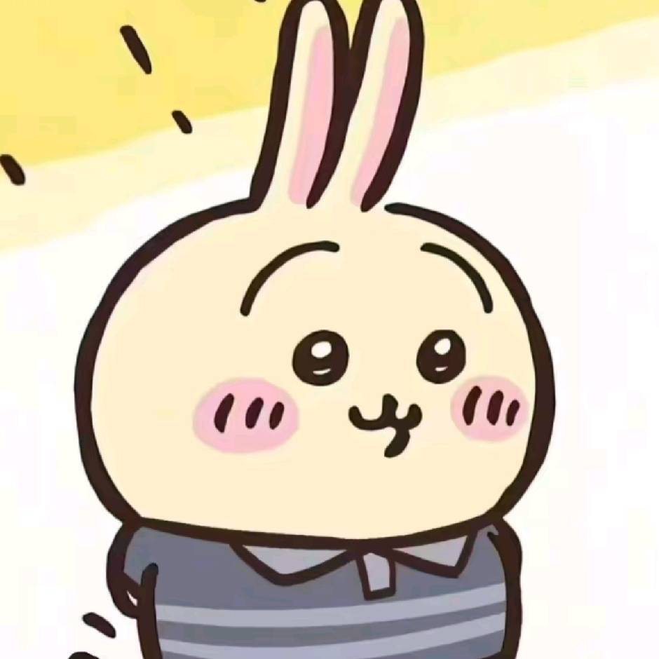

关于我

喜欢终端、等，以及一切有确定性的东西。 座右铭是「能自动化的事，就不要做第二次」。 这个博客从配色到布局都是手写的，没有用任何框架。
作品
total 4手机警报器
一个纯前端的警报音效模拟器。包含号角、气笛、战术警灯、 巡航警报、救护双音等多种模式，支持全局混响与三段均衡器实时调节， 所有音效均可点按触发或长按爬升，还带一键全停和自动随机轮换。
打开作品 →Windows XP 模拟器
在浏览器里复刻的 Windows XP 桌面环境。包含我的电脑、我的文档、 回收站、IE、记事本、计算器和扫雷等经典组件，能看到 C/D 盘容量、 软驱和 DVD 驱动器信息，甚至连开机和关机画面都还原了。
打开作品 →Windows 11 模拟器
在浏览器里复刻的 Windows 11 桌面环境。包含开始菜单、任务栏、 小组件、文件资源管理器、Microsoft Edge、记事本和计算器等核心组件， 支持深色/浅色主题切换，并还原了专注助手和通知中心等细节。
打开作品 →象棋棋局分析
一个纯前端的中国象棋分析工具。完整实现走子规则、马脚象眼阻挡、 将帅照面判负和困毙判断，点击棋子即可查看合法走法， 内置评估函数可一键推荐当前回合的最佳走法，并带获胜弹窗与移动端适配。
打开作品 →